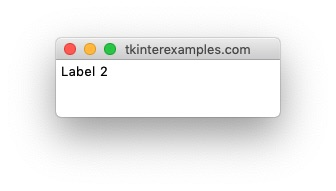
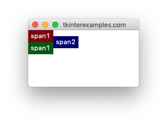
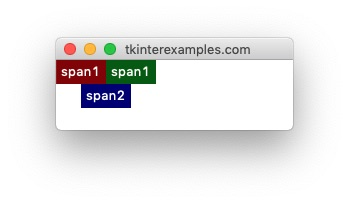
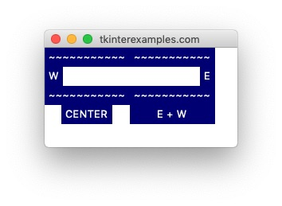

Grid
The grid geometry manager offers a good balance of precision and flexibility in its approach.
The foundation of grid is defining a row and column for widgets to occupy
and optionally providing information about how many rows or columns the widget should span. Many applications lend
themselves rather well to this type of geometry manager.
Rows and Columns #
The most important options to provide when using the grid geometry manager is the row and column the
element should be in.
The size of the grid is defined by usages before the .mainloop() call. Rows and columns
with no elements have
no height and width, respectively.
One Pitfall #
Using .grid() does allow items to overlap and thus not display properly.
If something isn't showing up as you expect double check the uniqueness of all your rows
and column definitions.
import tkinter root = tkinter.Tk() tkinter.Label(root, text="Label 1").grid(row=0, column=0) tkinter.Label(root, text="Label 2").grid(row=0, column=0) root.mainloop()
Basic Usage #
the grid geometry manager allows us to create elements in an orderly fashion, even programatically. We can use this to loop over the state of a board and draw elements for each component. Or we can use it to loop over a set of files and draw icons for them, the list goes on.
import tkinter
root = tkinter.Tk()
for row in range(3):
for col in range(3):
tkinter.Label(root, text=f"{row},{col}", fg="navy").grid(row=row, column=col, padx=10)
root.mainloop()

Span #
In the context of tkinter grid the word `span` refers to how many rows or columns an
element takes up. This is the second crucial point for defining the dimensions and layout of our grid.
By default all elements span one row and one column - this is also the minimum allowed span.
Row Span #
import tkinter root = tkinter.Tk() tkinter.Label(root, text="span2", bg="navy", fg="white").grid(row=0, column=1, rowspan=2) # rowspan=1 is the default tkinter.Label(root, text="span1", bg="darkred", fg="white").grid(row=0, column=0) tkinter.Label(root, text="span1", bg="darkgreen", fg="white").grid(row=1, column=0) root.mainloop()
Column Span #
import tkinter root = tkinter.Tk() tkinter.Label(root, text="span2", bg="navy", fg="white").grid(row=1, column=0, columnspan=2) # columnspan=1 is the default tkinter.Label(root, text="span1", bg="darkred", fg="white").grid(row=0, column=0) tkinter.Label(root, text="span1", bg="darkgreen", fg="white").grid(row=0, column=1) root.mainloop()
Sticky #
The grid geometry manager provides access to a sticky attribute which tells
tkinter
what to do if the cell is to large for the element it is holding. by default the widget will stay
centered in the cell which contains it – sticky="". Otherwise the behavior is defined by
string concatenation of the cardinal directions N, S, E, W. These correspond to what side of the cell the element
will stick to if needed. You can also use this to tell elements to stretch across portions of their cell
similiar to the fill= attribute in the pack geometry manager.
This is done by using any of the following constants: tkinter.EW, tkinter.NS, tkinter.NSEW.
import tkinter root = tkinter.Tk() # Padding tkinter.Label(root, text="~~~~~~~~~~~", bg="navy", fg="white").grid(row=0, column=0) tkinter.Label(root, text="~~~~~~~~~~~", bg="navy", fg="white").grid(row=0, column=1) tkinter.Label(root, text="W", bg="navy", fg="white").grid(row=1, column=0, sticky=tkinter.W) tkinter.Label(root, text="E", bg="navy", fg="white").grid(row=1, column=1, sticky=tkinter.E) # Padding tkinter.Label(root, text="~~~~~~~~~~~", bg="navy", fg="white").grid(row=2, column=0) tkinter.Label(root, text="~~~~~~~~~~~", bg="navy", fg="white").grid(row=2, column=1) tkinter.Label(root, text="CENTER", bg="navy", fg="white").grid(row=3, column=0, sticky="") tkinter.Label(root, text="E + W", bg="navy", fg="white").grid(row=3, column=1, sticky=tkinter.EW) root.mainloop()